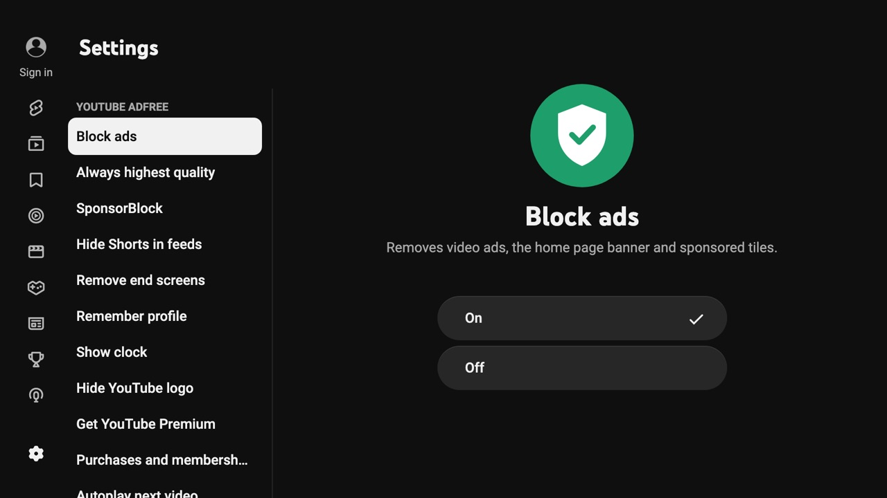
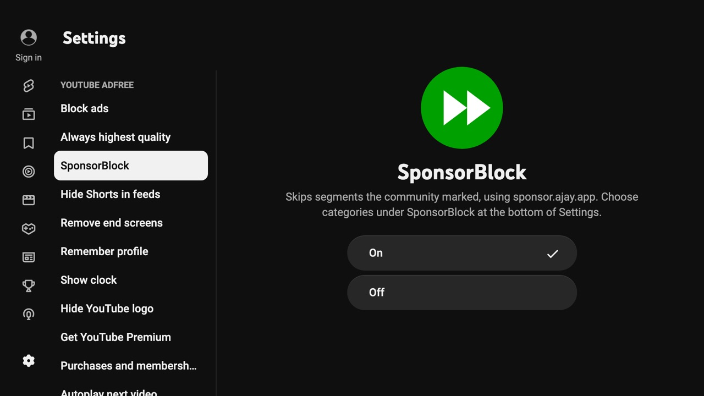
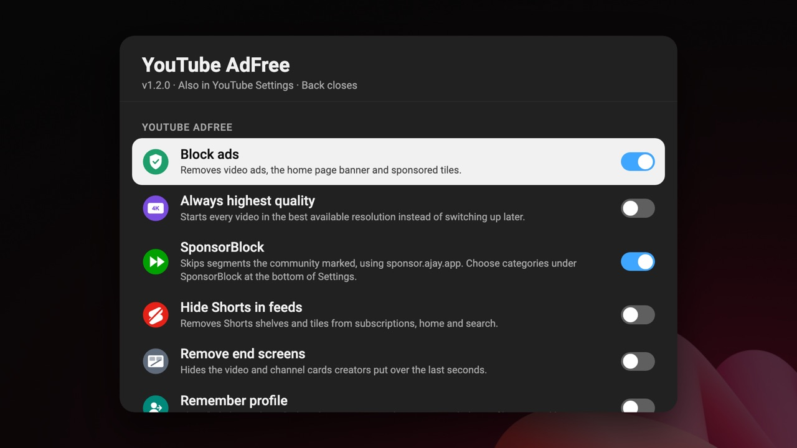

Install in three steps
You need Homebrew Channel on the TV (rooted TV or Developer Mode). Add the repository once and you get every future update too.
Open Settings
Start Homebrew Channel and select the gear icon.
Add the repository
Select Add repository and type the address below.
Install
Back in the app list, open YouTube AdFree with the black icon and select Install.
https://zucchiniii.github.io/youtube-webos/repo.json
Rooted TV: skip the typing
Run this over SSH or Telnet. Homebrew Channel opens with the address already filled in – just confirm.
luna-send -n 1 luna://com.webos.applicationManager/launch '{"id":"org.webosbrew.hbchannel","params":{"launchMode":"addRepository","url":"https://zucchiniii.github.io/youtube-webos/repo.json"}}'Without Homebrew Channel
Download the .ipk from the
latest release
and install it with
webOS Dev Manager. You won't get automatic updates this way.
Everything YouTube should be on a TV
Tuned on an LG C5 to be fast, reliable and easy to use.
No ads
Video ads, the home page banner and sponsored tiles are gone.
SponsorBlock
Skips sponsor reads, intros, outros and reminders. Segments show on the progress bar.
No black screens
A smooth transition when a video opens, and automatic recovery if one gets stuck loading.
Seamless previews
OK on a playing preview grows it into the full-screen video – no reload, no gap in the sound.
Remember profile
Skips "Who's watching?" and opens your last profile straight away.
HD thumbnailsAlways on
1280×720 thumbnails on every tile instead of blurry 320×180.
Settings in YouTube
Real On/Off toggles at the top of YouTube's own Settings. Works with remotes without colour buttons.
Settings never reset
Mirrored to storage YouTube can't wipe, so your choices stay.
And more
Highest quality, hide Shorts, remove end screens, a clock and audio-only mode on the blue button.
Looks like it belongs
The options sit inside YouTube's own interface. Remotes with a green button also get a quick panel.



Questions
Which TVs does it work on?
LG TVs with webOS 22 or newer (2022 and later), developed and
tested on an LG C5 with webOS 26. Older TVs can use a legacy build
made with pnpm run build:legacy.
Do I need a rooted TV?
No. Homebrew Channel also works in Developer Mode, though LG's Developer Mode has to be renewed regularly. A rooted TV is the easiest long-term setup.
Will I lose my YouTube sign-in?
Not if you install over the original webosbrew version – the app ID is the same, so your sign-in and settings stay. Coming from the official YouTube app, you sign in once.
How do updates work?
Homebrew Channel checks the repository and offers new versions
automatically. If you installed the .ipk by hand, add
the repository to get updates.
Where are the settings?
YouTube's Settings (gear in the left menu): YouTube AdFree at the top, SponsorBlock categories and Reset/About at the bottom.
A video stays black – what now?
The automatic recovery normally fixes it within seconds. If it keeps happening, turn off "Always highest quality" and open an issue with your TV model.